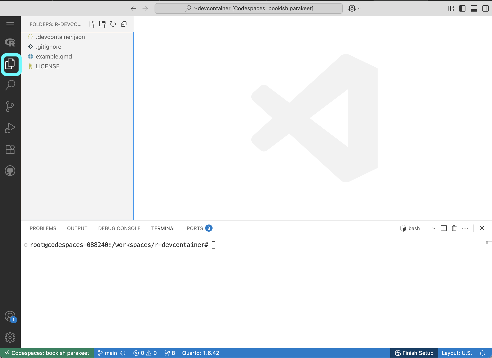
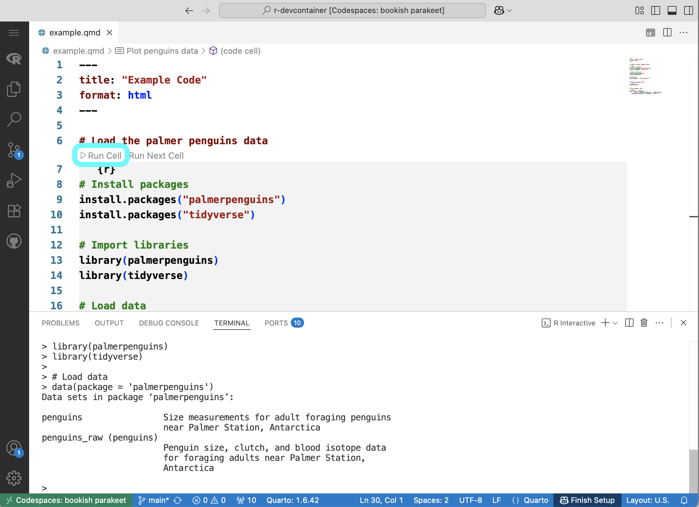

Launch GitHub Codespaces with a Custom R Environment
devcontainer Configuration for R
Use the devcontainer configuration option in GitHub Codespaces to launch a custom R and package installation.
Installing software correctly is one of the hardest things about coding, but learners need to do it before they can get started on the fun stuff of coding. GitHub Codespaces is a freemium cloud-based programming platform. We like it for workshops and short courses because:
- Learners don’t need expensive equipment
- We can launch a custom container so they can get started coding quickly and easily
- It links seamlessly with GitHub, avoiding having to set up authentication or clone repositories
Of course, there are lots of options out there for coding in the cloud, but we find the Codespaces is a good balance of affordability and functionality with nice student benefits as of this writing.
R on Codespaces
To use R on GitHub Codespaces, you will need to configure the Codespace using the Development Containers specification. This is done with a file in your repository called either .devcontainer.json or .devcontainer/devcontainer.json.
It is possible to work with the RStudio IDE (integrated development environment) in GitHub Codespaces, but we usually work with the built-in VSCode (Visual Studio Code). There are a couple of extra steps to opening up RStudio, and so we prefer to keep it simple for workshops.
devcontainer Files
devcontainer files specify how you would like your Codespace configured. Here is an example of a devcontainer.json file that launches an R image developed by the rocker project with some features needed for smoothlyworking in VSCode rather than RStudio:
{
"name": "RStudio Environment",
1 "image": "rocker/rstudio:latest",
"extensions": [
2 "REditorSupport.r",
3 "quarto.quarto"
]
}- 1
- Start with the latest rocker RStudio image
- 2
- Add R autocomplete and checks
- 3
- Add quarto support
Applying a Custom R environment
To run a GitHub Codespace with R, you will need to create a .devcontainer.json file and add your configuration.
STEP 1: Create a .devcontainer.json file
New File option..devcontainer.jsonSTEP 2: Configure container
.devcontainer.json file and make any additions or changes that you want..devcontainer.json file.Launching a Codespace for R
Code button and make sure the Codespaces tab is selected.Create codespace on main to launch the Codespace.Now you should see your Codespace.
Your Codespace may take a few minutes to build – be patient! Do not try to start up a second Codespace while the first is still building!
# Reorganize your screen
By default, the output from your R Code will appear on the bottom panel and plots will appear in tabs next to your code. You may wish to reorganize your screen, for example by putting the output and the code side-by-side. This will also make your plots show up in a different panel from your code.
STEP 1: Open the example Quarto notebook
STEP 2: Collapse the left panel
This will give you more room to see what’s going on.

STEP 3: Run some code
It doesn’t matter what you run – this will open up an R Interactive window where your code outputs will appear in the future.

STEP 4: Move terminal to editor
The terminal is where you will see your R output. To view it side-by-side, we recommend moving it out of the bottom panel and into the editor.
STEP 5: Split screen
R Interactive tab to the right until the right half of the screen is highlighted.
Additional configuration options
You can add on to your .devcontainer.json file with any number of extension, settings, and other parameters. There are a couple that we suggest for working with R:
{
"name": "RStudio Environment",
"image": "earthlabcu/mefa_2024:latest",
"settings": {
1 "r.plot.devArgs": {
"width": 1200,
"height": 500
},
2 "workbench.editorAssociations": {
"*.qmd": "quarto.visualEditor"
}
},
"extensions": [
"REditorSupport.r",
"quarto.quarto"
]
}- 1
- Set the default plot size
- 2
- Use the quarto visual editor by default
You can find more information about Development Container specifications at the documentation website